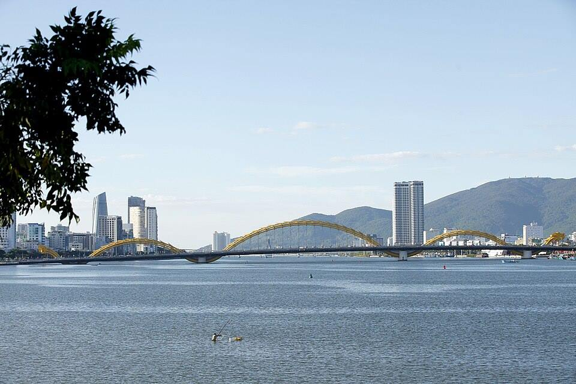
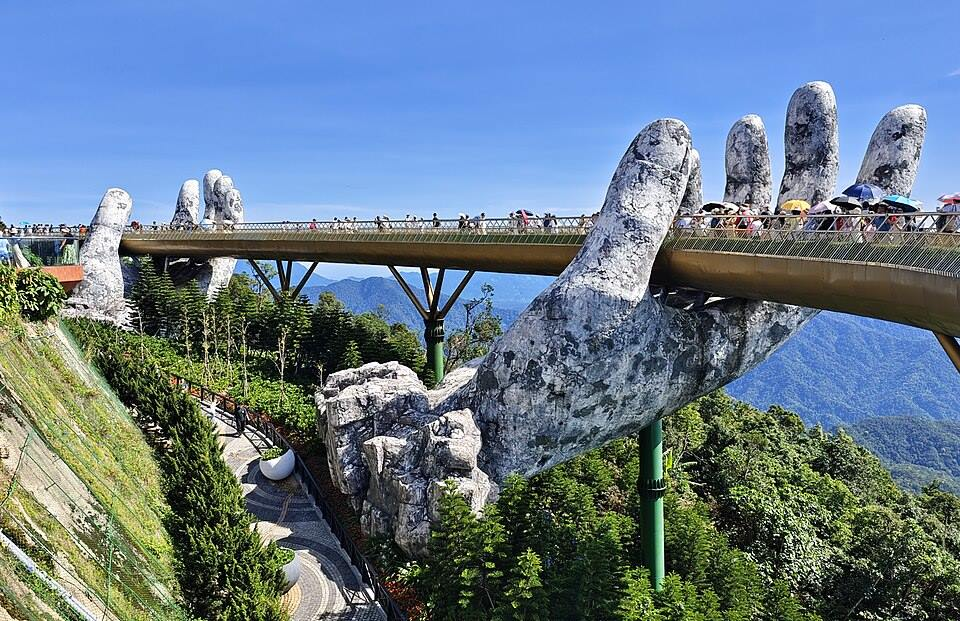
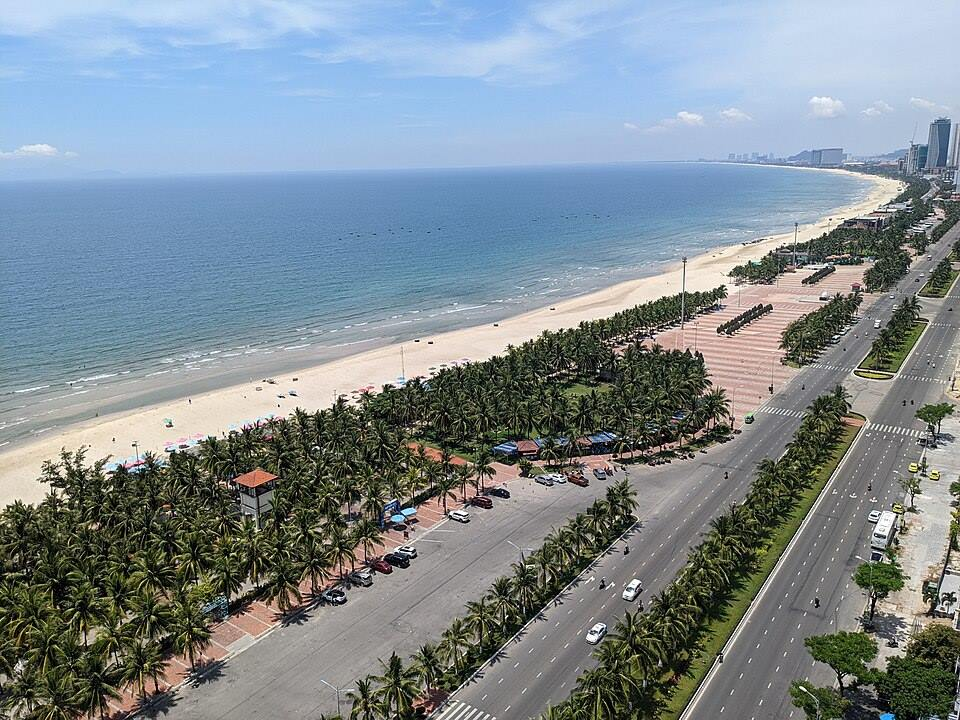
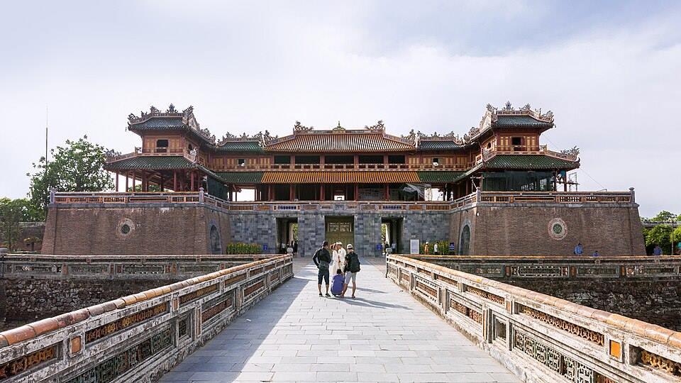
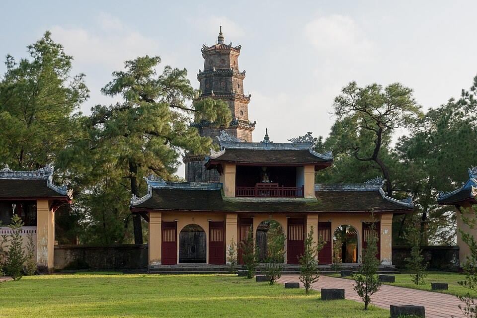

Da Nang
Da Nang is known for Ba Na Hills, the Golden Bridge, My Khe Beach, and the Marble Mountains.
Central Vietnam is known for its beautiful beaches, historic cities, ancient architecture, and cultural heritage. The region combines natural beauty with important historical and cultural sites.



Da Nang is known for Ba Na Hills, the Golden Bridge, My Khe Beach, and the Marble Mountains.

Hoi An is famous for its Ancient Town, colorful lanterns, traditional architecture, and beautiful atmosphere at night.


Hue is known for the Imperial City, the tombs of the Nguyen Emperors, and Thien Mu Pagoda.